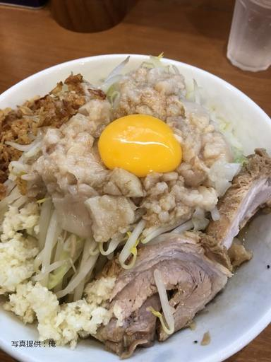
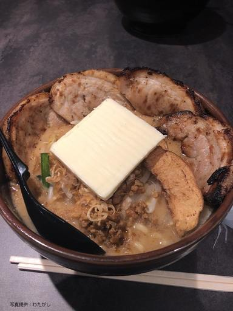
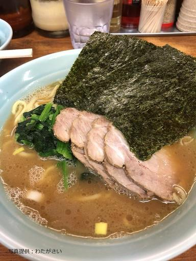
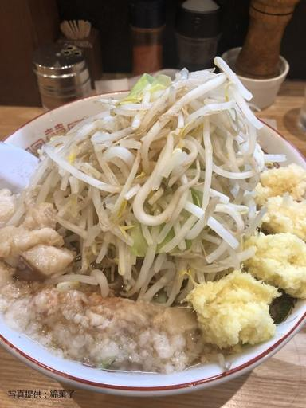
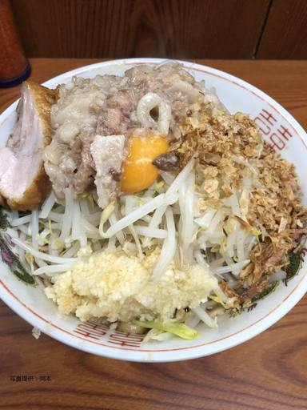
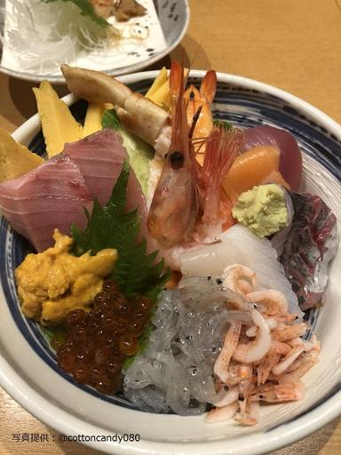

皆さんこんにちは。 二回生 DTN 班の綿菓子こと岡本です。 今回の記事では、ここ一年くらいでよく食べに行ったラーメン屋さん＋ α のお店を紹介しようと思います。 こいついっつもラーメンの話しかしてねぇなって思う方も多いと思うんですが、実際そうなので仕方ないですね。
 のっけから二郎系なんですが、ここはとても美味しいですね。 店主の方が本家二郎から独立した方で、本家とも遜色の無いおいしい二郎系のラーメンが食せます。 僕が初めて食べた二郎系もここのお店で、コールの方法やデフォルトではニンニクが入っていない事や量もそこまで多くないなど、初心者向けのお店ではないかと思っています。 千葉駅の周辺にあるので少し遠いし、時間帯によっては結構並ぶんですけどそこまで行って食べるだけの価値はあるのではないでしょうか。 評価はちょっと遠いので ☆ 4 です。
 ちょっと前に津田沼にできた味噌ラーメンのお店ですね。 僕はつい最近になってようやく行ったんですけど、普通に胃もたれしました。 麺大盛りにバターとチャーシューをトッピングしてしまったので、そういうこともありますね。 皆さんは若いので大丈夫ではないでしょうか。 ラーメン自体は、あまり味噌ラーメンが好きではない僕でもおいしく食べられた上に、何よりもチャーシューのボリュームが凄かったですね。 僕は胃もたれしましたけど。
 家系ラーメンのお店で、津田沼近辺で言えば東船橋にある店舗ですね。 チェーン店なので、関東周辺でしたら結構見かけることも多いんじゃないかと思います。 豚骨系のこってりとしたラーメンで、おろしにんにくなどの様々なトッピングが出来ます。 一番素晴らしいのが、ごはんが食べ放題なのでスープに浸して食べるもよし、チャーシューと一緒に食べるも良いです。 僕が一番好きな食べ方は、スープに海苔を浸してご飯と一緒に食べることですね。 おろしにんにくを入れると皆さんたくさん入れましょう。 僕はよく負けてお腹を壊しますけど。
 津田沼で食べることの出来る『唯一』の二郎インスパイアのラーメン屋さんです。 普通の二郎ほど量があるわけでは無いので、戦闘態勢じゃない僕でも全マシでも全然食べることが出来ました。 生姜を入れると、スープが完成されて美味しい感じになるので生姜は入れた方がいいですね。
 ここ、これですよ。 亀戸にあるのでかなり遠い上にめちゃめちゃ並びます。 それでも、それ相応の味と量、そして満足感を得ることができます。 他のお店と比べてかなり量もあるし、味も濃ゆいです。 まず最初にチャーシューを食べて、それから野菜と麺に取り掛かる。これはかの有名な諸葛良孔明も「我、最初肉食。 次麺野菜食也。応」という言葉を残しているほどです。 最近気づいたことなのですが、二郎系は野菜を少なめにして食べると麺と野菜を良い感じにおいしく食べられます。 ここはバトルできる人はぜひ一度行ってほしいですね。 僕は亀戸の二郎に行くたびに、ジャンケンで負けた方がバナナを食べるという剣闘士も真っ青なことをしているのですが、現在 4 戦 0 勝 4 敗です。
 おいしかったです。
以上で、ここ一年間で食べたラーメンなどの紹介を終わります。 本当はまだまだおすすめのお店はあるので、誘っていただければ喜んで僕はついていきます。 僕の他にもラーメンが好きな人はたくさんいるので、皆さんラーメンから始まる熱い友情関係を築いてください。 現 2 回生のすいま君もラーメンが好きとのことなので、皆さん誘ってみてはいかがでしょうか？ 最後に DTM 班向けなんですけど、昔の中国のことわざに「麺の太さに比例して音圧も太くなる」という言葉があります。 さすが中国 4000 年の歴史！我々がいるところは既に彼らが 2000 年前に通った場所なんでしょうね。 それではこの辺で終了とさせていただきます。 ご清聴ありがとうございました。